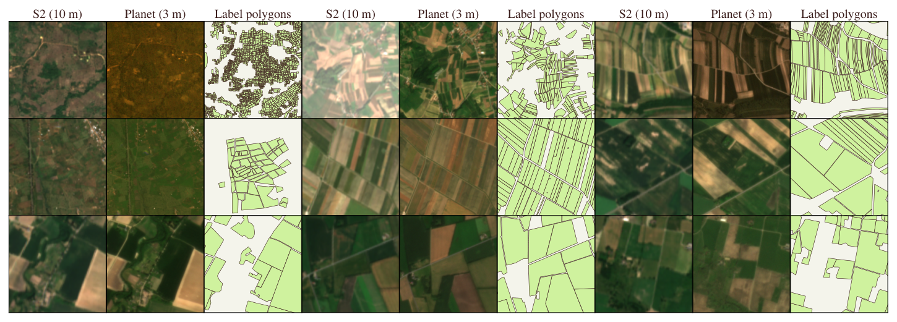

Fields of The World · PlanetScope companion
Fields of the Planet
Field boundary mapping beyond 10 meters
Taylor Geospatial · 2026

Abstract
A controlled test of resolution for field delineation
Field-boundary maps support crop monitoring, irrigation planning, and yield estimation, but many smallholder parcels span only a few 10 m Sentinel-2 pixels. Roughly 510 million farms under 2 ha account for about 84% of the world's farms by count, and a 10 m grid resolves their boundaries worst.
Fields of the Planet (FTP) is a 3 m PlanetScope companion to Fields of The World (FTW). It keeps the same polygons, seasonal windows, and train/test splits, and pairs 133,168 patch-window targets across 24 countries with co-registered PlanetScope surface reflectance. This isolates the effect of spatial resolution, holding the labels and protocol fixed and changing only the imagery.
We evaluate delineation as parcel recovery. Predictions are vectorized and scored as polygon objects, using panoptic quality (PQ), object F1 over the COCO IoU grid, and meter-scale matched-boundary error. Pixel overlap alone understates the benefit of higher resolution, so we do not rely on it.
Motivation
The 10 m grid loses small fields before training begins
The limit appears in the labels themselves. Rasterizing FTW's own polygons onto a 10 m grid merges adjacent parcels: only 7.5% of sub-0.5 ha fields remain separable as distinct polygons at 10 m, versus 88.3% at 3 m. A model trained on 10 m targets cannot recover fields the grid has already merged.

Results
3 m imagery improves recovery and boundary localization
We train matched U-Net models with an EfficientNet-B3 encoder on each sensor. Replacing 10 m Sentinel-2 with 3 m PlanetScope improves every polygon-level metric, with the largest relative gain on the smallholder fields a 10 m grid cannot resolve.
| Metric | Sentinel-2 (10 m) | PlanetScope (3 m) |
|---|---|---|
| Panoptic quality (PQ) | 21.0 | 35.5 |
| PQ on fields < 0.5 ha | 5.8 | 15.7 |
| Object F1 at IoU 0.5 | 28.9 | 46.2 |
| Matched-boundary error (m) | 18.6 | 7.4 |
Matched boundaries are also localized more than twice as accurately. A finer output grid alone (upsampled Sentinel-2) does not close the gap, because it cannot recover edges the input never resolved.

Dataset
What ships in the release
- Coverage
- 66,584 patches · 133,168 image-window pairs · 24 countries / 25 labeled regions
- Imagery
- PlanetScope
ortho_analytic_4b_sr— 4 bands (B/G/R/NIR), ~3 m GSD, native UTM,uint16 - Windows
- Two seasonal acquisitions per patch (planting and harvest)
- Labels
- 3-class raster (background / interior / boundary) plus the original FTW vector polygons as GeoParquet
- Format
- One WebDataset tar per region (25 shards, ~94 GiB) and a GeoParquet index
- License
- CC-BY-NC 4.0 (inherits Planet's non-commercial terms); labels carry their per-region FTW licenses
Citation
BibTeX
@inproceedings{corley2026ftp,
title = {Fields of the Planet: Field Boundary Mapping Beyond 10m},
author = {Corley, Isaac and Robinson, Caleb and
Marcus, Jennifer and Kerner, Hannah},
year = {2026}
}